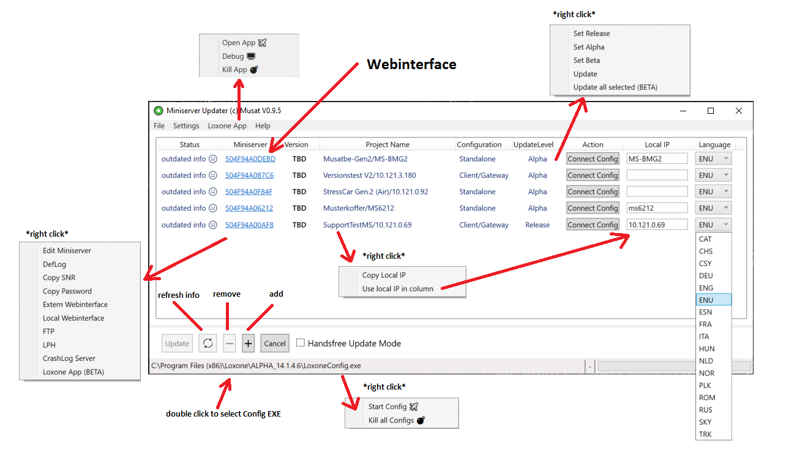

Miniserver Updater:
You can update and maintain your Miniservers installations easily with the Miniserver Updater.
Features:
- Overview about a Miniserver
- Version
- Project name
- Configuration Type, i.e. Standalone or Client Gateway
- Updatelevel
- Updating
- Via Config one by one
- Set Language of connecting/updating Miniserver
- Via AutoUpdate if standalone
- Managing the Miniserver list
- Add Miniserver
- Delete Miniserver
- Edit entry
- Easy access to:
- Webinterface local or remote
- Copy SNR
- Copy Password
- FTP via File Explorer
- LPH of the Miniserver
- Crashlog Server
- Changing Updatelevel
- Connecting to Miniserver
- Will start the Config with specified Language
- Will load from Miniserver
- Save / Load different Miniserver Configuration Lists via JSON
- Application Settings
- Default Config Path
- Default Miniserver configuration path
- Loxone app
- Open Loxone App
- Kill Loxone App
- Open Loxone App in Debug
User Interface:
